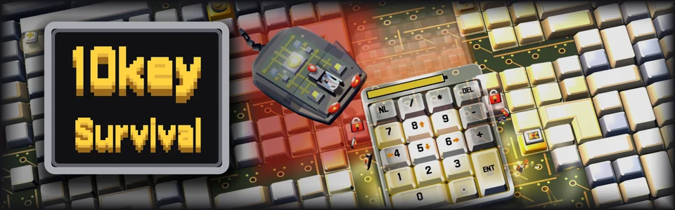
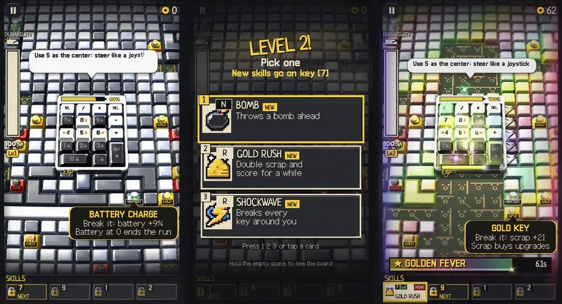
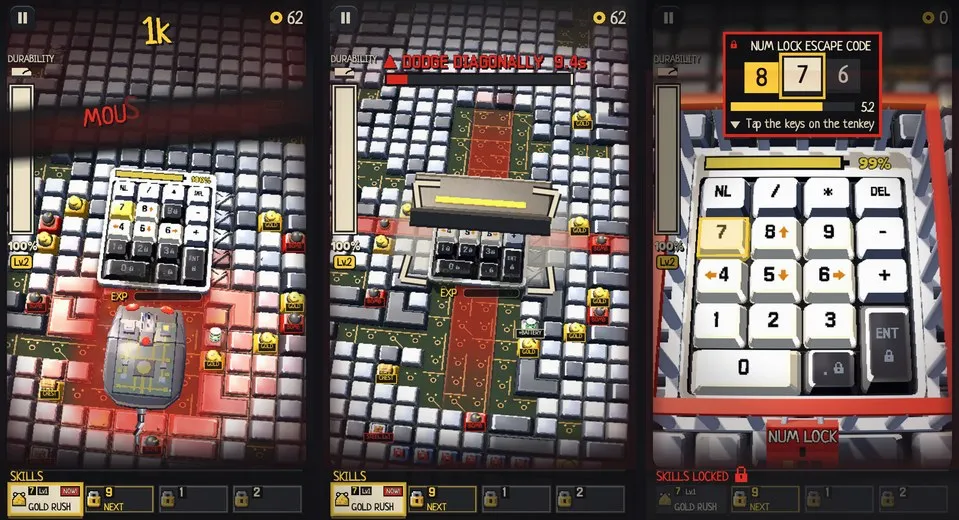
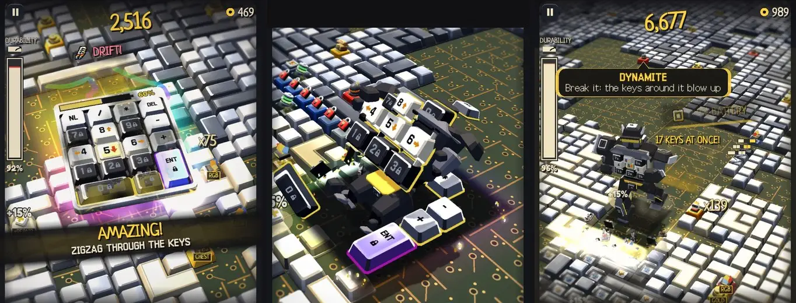
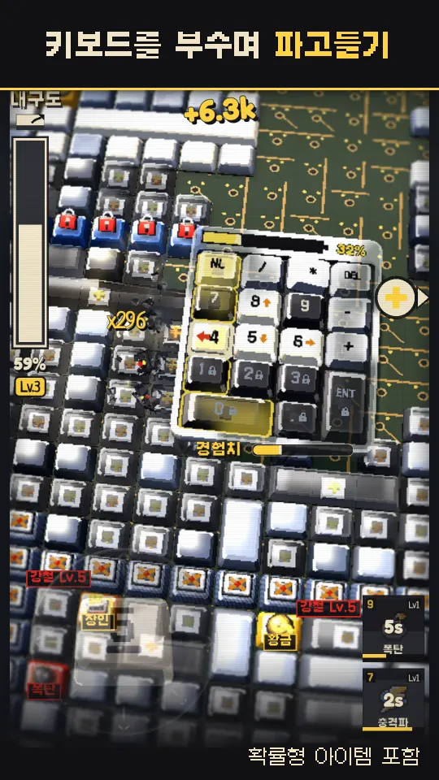
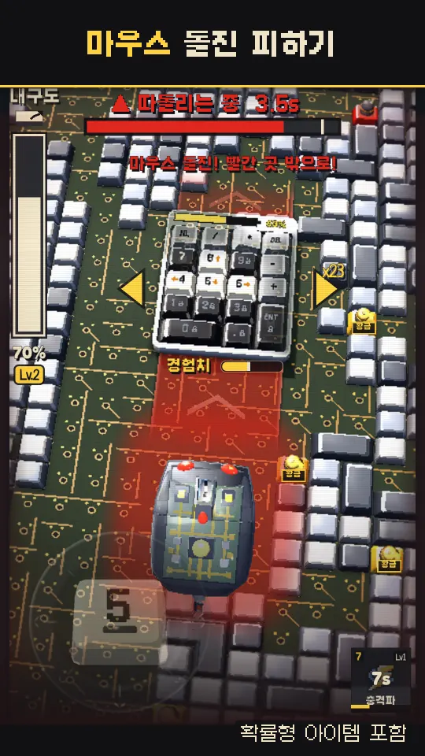
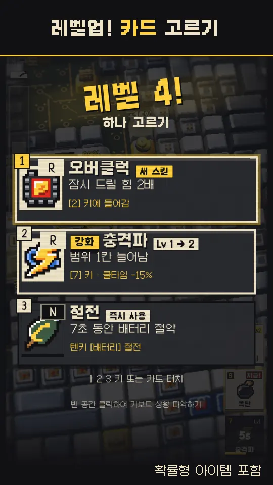
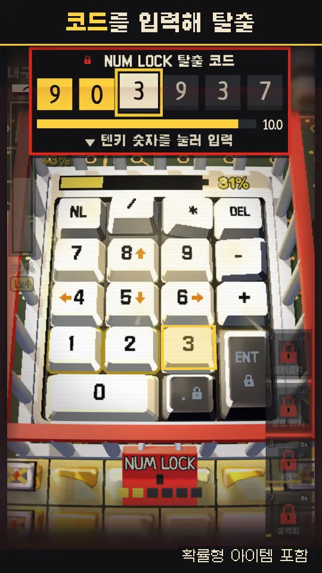
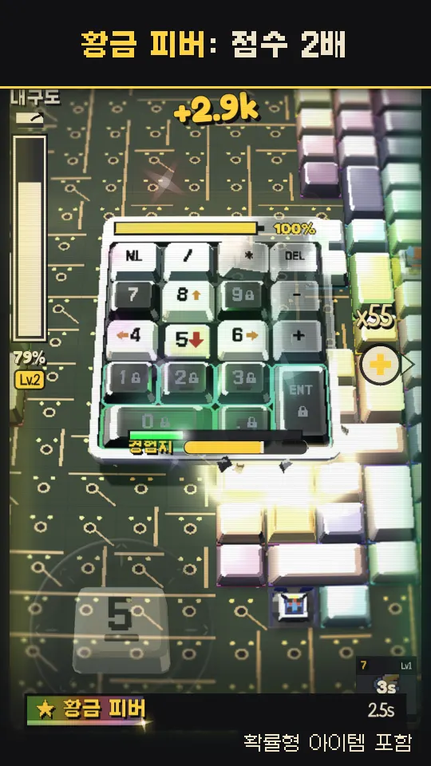

신작출시 준비 중
딸깍 서바이벌10key Survival
화려한 모험, 그리고 ASMR
부수는 키마다 실제로 녹음한 키보드 소리가 딸깍, 와장창 울려요. 살아 있는 텐키가 되어 끝없는 3D 키보드를 파고 내려가세요.
출시 날 iOS·Android 다운로드 링크를 메일 한 통으로 보내 드려요.
출시 전 무료 미리보기예요. 설치·가입 없이 브라우저에서 바로 시작돼요.

파고들기
방향을 누르고 있으면 키를 부수며 내려가요. 레벨업마다 카드 세 장 중 하나를 골라요.

살아남기
레벨 7부터 마우스가, 레벨 14부터 스페이스바가 쫓아와요. 계속 움직이세요.

진화하기
드리프트 카드로 키보드가 되고, 변신 카드로 로봇이 될 수 있어요.





iOS·Android 앱 출시 준비 중: 유료 앱, 앱 내 구매 포함. 확률형 아이템(모듈 뽑기) 포함: 모듈 12종, 각 8.333%(1/12). 확률 정보
출시작버전 2.0.0
Quirky Ball
2D 머지에서 3D 비커, 보스전까지. 쿼키와 함께 실험실을 탈출하세요.
무료 다운로드, 광고 및 앱 내 구매 포함
플레이어들이 함께 연구한 점수—점
—최근 플레이 횟수
기록을 불러오는 중…
어떤 점수를 더했나요?
클래식·실험실 연구 판의 점수 기록과 지금 모든 플레이어의 쿼키력을 더했어요. 최근 플레이 횟수는 점수가 기록된 판과 실험실 탈출 판의 수예요. 테스트·운영 계정, 관리자가 제외하거나 고친 기록, 계정에 연결되지 않은 기록과 중복은 뺐어요. 서비스 초기 기록 일부는 서버 보관 기간이 지나 이미 지워져 들어 있지 않아요.
동무와 멋진신세계